set.seed(123)
# Simular 200 pacientes
n <- 200
# Simular el índice de masa corporal y la insulina en una población
# de 200 pacientes
df_sim <- tibble(
imc = rnorm(n, mean = 27, sd = 4),
insulina = 5 + 0.8 * imc + rnorm(n, 0, 5) # genera valores
# aleatorios con una media de 0 y una desviación de 5
)7.- Distribuciones conjuntas
1. Intuición (SIN código)
Hasta ahora has visto variables por separado:
- IMC
- insulina
- triglicéridos
- circunferencia de cintura
Cada una te dice algo… pero la medicina real no funciona así.
👉 Un paciente no tiene “solo IMC”
👉 Tiene IMC + insulina + grasa visceral + estilo de vida
¿Qué es una distribución conjunta?
Una distribución conjunta es simplemente:
Mirar dos variables al mismo tiempo, en lugar de analizarlas por separado.
Analogía clínica
Imagina que quieres evaluar riesgo metabólico.
Si miras solo IMC:
- 28 → sobrepeso
- 32 → obesidad
Pero eso no es suficiente.
Ahora agrega insulina:
| IMC | Insulina | Interpretación |
|---|---|---|
| 28 | baja | probablemente sano |
| 28 | alta | posible resistencia a la insulina |
| 32 | baja | obesidad pero metabólicamente más estable |
| 32 | alta | alto riesgo |
👉 El riesgo aparece en la combinación, no en la variable aislada.
Variable individual vs conjunto
Análisis separado
- IMC promedio
- Insulina promedio
Esto responde:
“¿Cómo es cada variable por separado?”
Análisis conjunto
- IMC + insulina al mismo tiempo
Esto responde:
“¿Cómo se relacionan entre sí?”
Asociación y dependencia (sin matemáticas)
Cuando analizamos dos variables juntas, buscamos:
1. Asociación
¿Cuando una sube, la otra también?
Ejemplo:
- A mayor IMC → mayor insulina
👉 Esto sugiere resistencia a la insulina
2. Patrones
No siempre es una línea perfecta:
- Puede haber grupos
- Puede haber curvas
- Puede haber subpoblaciones
3. Dependencia
Pregunta clave:
¿Saber si una variable me ayuda a predecir la otra?
- Si sí → están relacionadas
- Si no → son independientes
Idea clave del capítulo
Las enfermedades no dependen de una variable, sino de la interacción entre varias.
Esto conecta directamente con La Teoría Hormonal de la Obesidad:
- La obesidad no es solo calorías
- Es hormonal (insulina)
- Es inflamatoria
- Es multifactorial
👉 Y eso solo se ve cuando analizas variables juntas.
2. Ejemplo simple (simulación en R)
Vamos a crear un ejemplo sencillo:
- IMC
- Insulina (relacionada con IMC)
Visualización conjunta
# Visualizar insulna vs índice de masa corporal
ggplot(df_sim, aes(x = imc, y = insulina)) +
geom_point(alpha = 0.6) +
# method = "loess" genera una línea suavizada "adaptable" no recta
geom_smooth(method = "loess", se = FALSE, color = "blue") +
labs(
title = "Relación entre IMC e insulina (simulada)",
x = "IMC",
y = "Insulina"
)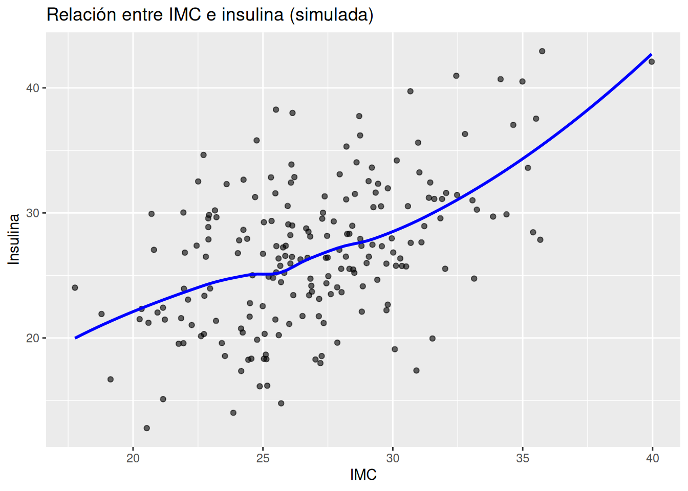
¿Qué estás viendo?
- Cada punto = un paciente
- Eje X = IMC
- Eje Y = insulina
👉 La línea suavizada muestra la tendencia general.
Interpretación
- A mayor IMC → mayor insulina
- No es perfecto → hay variabilidad
- Pero hay un patrón claro
👉 Esto es una distribución conjunta visual
3. Ejemplo aplicado con NHANES
Ahora vamos a datos reales.
Preparación
# Seleccionar sólo las variables que voy a usar
df_joint <- df_obesidad %>%
select(BMXBMI, LBXIN, BMXWAIST, LBXTR, RIAGENDR, RIDAGEYR) %>%
drop_na()IMC + insulina
# Diagrama de dispersión que relaciona el índice de masa corporal con
# los niveles de insulina
df_joint %>%
filter(
LBXIN <= 50,
BMXBMI <= 50
) %>%
ggplot(aes(x = BMXBMI, y = LBXIN)) +
geom_point(alpha = 0.1) +
# se = FALSE : se usa para no mostrar la franja de error estándar
geom_smooth(method = "loess", se = FALSE) +
#geom_smooth()
labs(
title = "IMC vs Insulina",
x = "IMC",
y = "Insulina"
)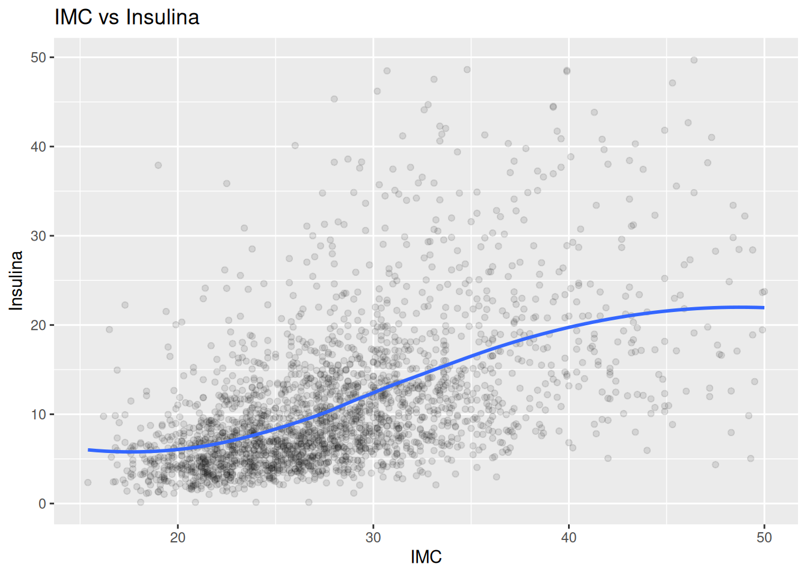
# NOTA: la insulina tiende a estabilizarse porque hay pocos pacientes
# con un imc > 50; en fases avanzadas de la enfermedadmetabólica
# el páncreas puede empezar a fallar y esto disminuye la secreción
# de insulina; esto puede reflejar una transición de hiperinsulinemia
# a disfunción beta pancréatica.Qué buscar
- ¿La línea sube? → asociación positiva
- ¿Hay dispersión? → variabilidad biológica
- ¿Hay zonas con más densidad? → subgrupos
Estratificación por sexo
# Diagrama de dispersión que relaciona el índice de masa corporal con
# los niveles de insulina facetado por sexo donde 1 es hombres y 2 es
# mujeres
df_joint %>%
filter(
LBXIN <= 50,
BMXBMI <= 50
) %>%
ggplot(aes(x = BMXBMI, y = LBXIN)) +
geom_point(alpha = 0.3) +
geom_smooth(method = "loess", se = FALSE) +
#geom_smooth()
facet_wrap(~ RIAGENDR) +
labs(
title = "IMC vs Insulina por sexo",
x = "IMC",
y = "Insulina"
)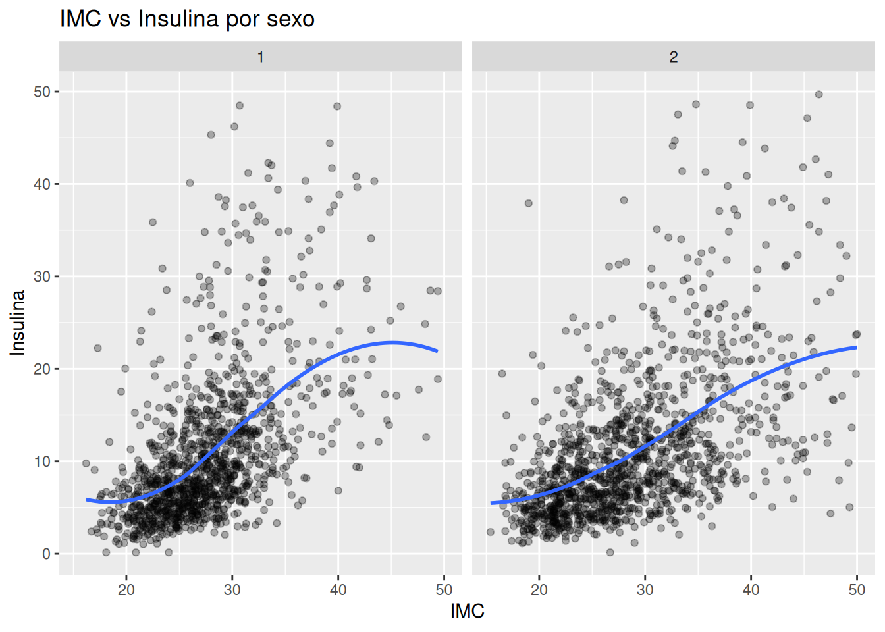
👉 Esto permite ver:
- ¿El patrón es igual en hombres y mujeres?
- ¿Hay diferencias clínicas relevantes?
Cintura + triglicéridos
# Diagrama de dispersión que relaciona la ciercunferencia de cintura
# con la trigliceridemia
df_joint %>%
filter(
LBXTR <= 500#,
#BMXWAIST <= 150
) %>%
ggplot(aes(x = BMXWAIST, y = LBXTR)) +
geom_point(alpha = 0.4) +
geom_smooth(method = "loess", se = FALSE) +
labs(
title = "Circunferencia de cintura vs Triglicéridos",
x = "Cintura (cm)",
y = "Triglicéridos"
)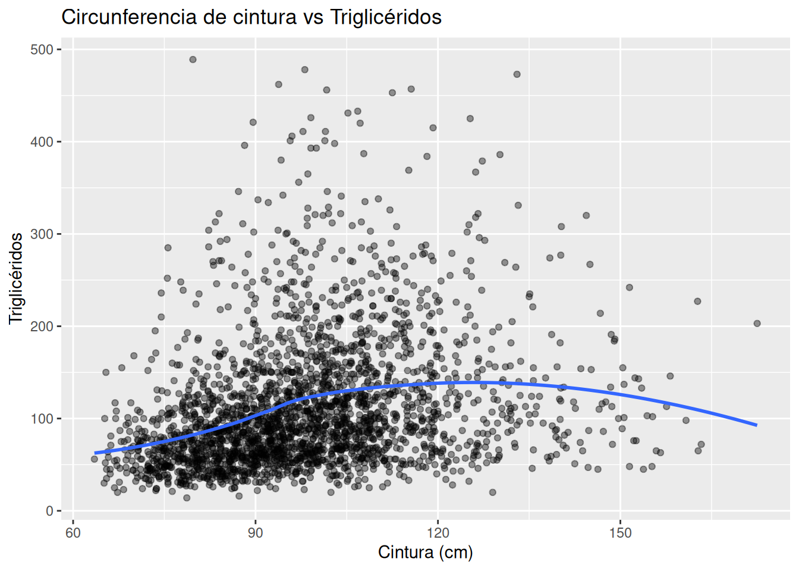
# NOTA: La curva se aplana y desciende porque: hay menos datos en
# extremos mayores a 135; hay saturación metabólica, al inicio
# más grasa visceral aumenta triglicéridemia , pero luego el sistema
# ya está alterado y no sigue aumentando linealmente (como si el
# cuerpo tocara un techo); puede der que un paciente con una
# circunferencia muy amplia ya esté tomando estatinas o fibratosQué estás evaluando
👉 Grasa visceral + metabolismo lipídico
Esto es clave para:
- síndrome metabólico
- riesgo cardiovascular
4. Interpretación clínica
1. La obesidad no es una sola dimensión
Un paciente con:
- IMC alto
- pero insulina normal
NO es igual que:
- IMC alto
- insulina elevada
👉 El segundo tiene mayor disfunción metabólica.
2. La insulina como eje central
Cuando ves:
- IMC ↑
- Insulina ↑
👉 Estás viendo resistencia a la insulina en acción
Esto encaja perfectamente con La Teoría Hormonal de la Obesidad:
- La insulina no solo responde al peso
- También lo dirige
3. Riesgo cardiometabólico
Cuando observas:
- Cintura ↑
- Triglicéridos ↑
👉 Estás viendo:
- grasa visceral
- dislipidemia
- inflamación
4. La importancia de la variabilidad
No todos los puntos siguen la línea.
Eso significa:
- Hay otros factores influyendo
- (dieta, genética, actividad, sueño)
👉 Esto es incertidumbre real.
Idea final del capítulo
Una distribución conjunta te permite ver la medicina como realmente es: un sistema de variables interactuando.
Conexión bayesiana
Aunque aún no usamos modelos formales, ya estás pensando como bayesiano:
- No miras variables aisladas
- Integras información
- Aceptas incertidumbre
- Buscas patrones, no certezas absolutas
Lo que viene
En los siguientes capítulos, vamos a dar el siguiente paso:
👉 Usar estas relaciones para construir modelos
👉 Y empezar a cuantificar la incertidumbre de forma explícita
Ejercicios
Ejercicio 1 — Ver lo invisible
👉 Objetivo: notar cómo cambia la relación
df_joint %>%
filter(
LBXIN <= 50#,
#BMXBMI <= 50
) %>%
ggplot(aes(x = BMXBMI, y = LBXIN)) +
geom_point(alpha = 0.2) +
geom_smooth(method = "loess", se = FALSE)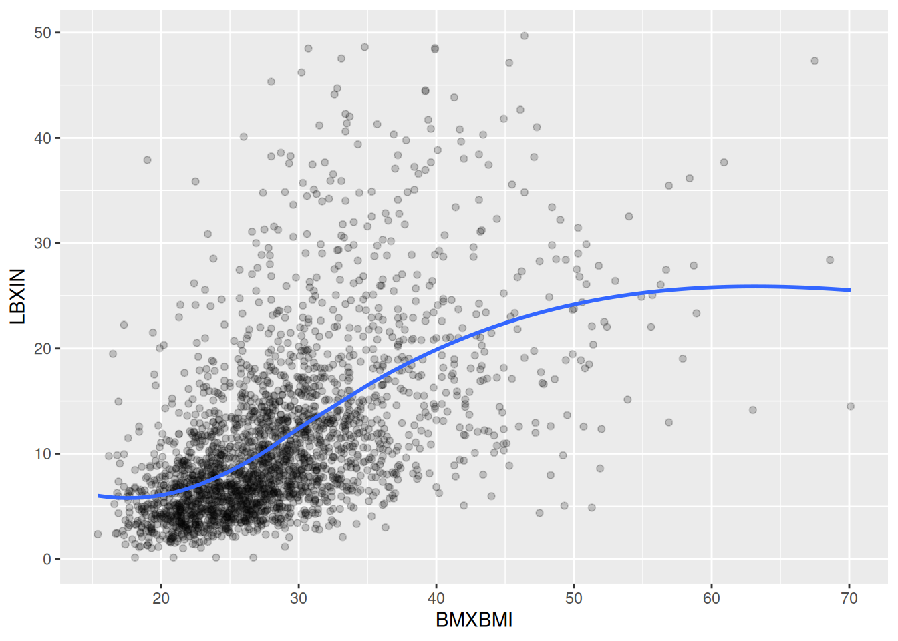
Preguntas
- ¿En qué rango de IMC la pendiente es más fuerte?
- ¿Dónde empieza a cambiar?
- ¿Hay zonas con más densidad de puntos?
Ejercicio 2 — Cambiar el lente
👉 Cambia LOESS por línea recta:
# geom_smooth(method = "lm")df_joint %>%
filter(
LBXIN <= 50#,
#BMXBMI <= 50
) %>%
ggplot(aes(x = BMXBMI, y = LBXIN)) +
geom_point(alpha = 0.2) +
geom_smooth(method = "lm", se = FALSE)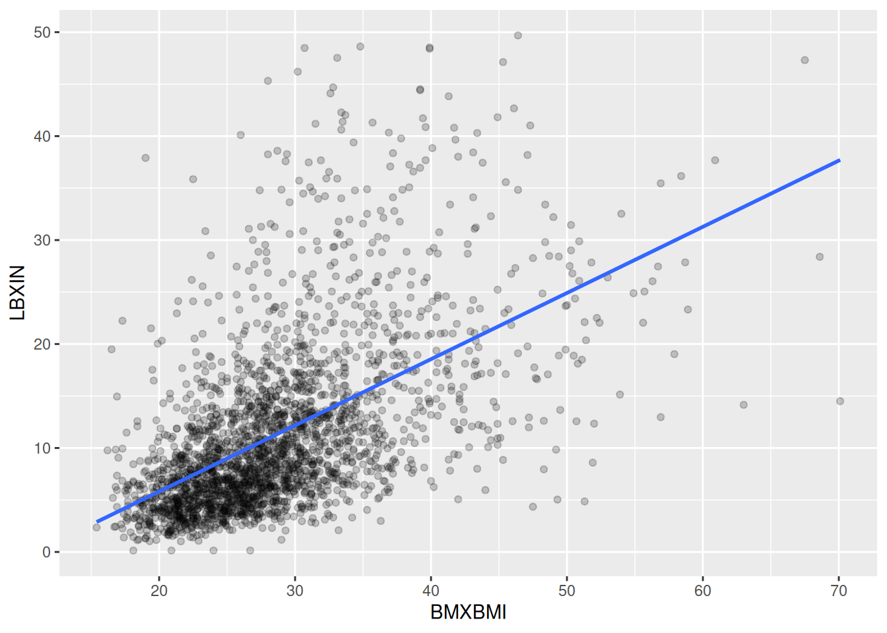
Preguntas
- ¿Qué información pierdes?
- ¿Cuál describe mejor la realidad clínica?
Ejercicio 3 — Estratificación clínica
# facet_wrap(~ RIAGENDR)df_joint %>%
filter(
LBXIN <= 50#,
#BMXBMI <= 50
) %>%
ggplot(aes(x = BMXBMI, y = LBXIN)) +
geom_point(alpha = 0.2) +
#geom_smooth(method = "loess", se = FALSE) +
geom_smooth(method = "lm", se = FALSE) +
facet_wrap(~ RIAGENDR)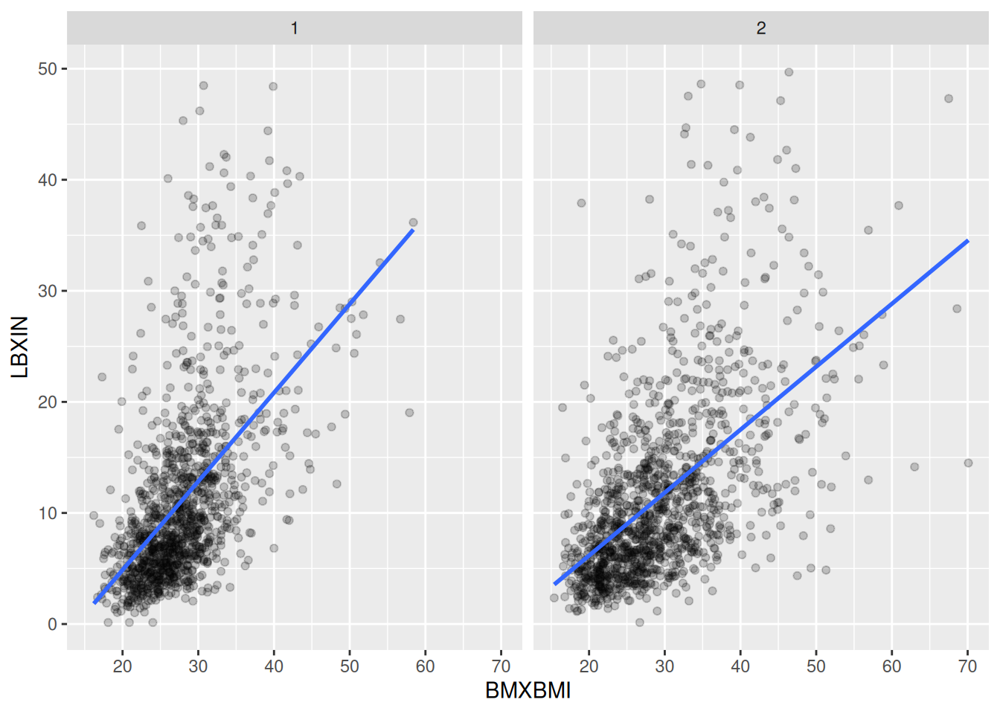
Preguntas
- ¿Las curvas son iguales en hombres y mujeres?
- ¿Dónde hay más dispersión?
- ¿Qué hipótesis clínica puedes generar?
Ejercicio 4 — Detectar extremos
👉 Filtra:
# df_joint %>%
# filter(BMXBMI > 45)Luego grafica otra vez.
df_joint %>%
filter(
LBXIN > 45#,
#BMXBMI <= 50
) %>%
ggplot(aes(x = BMXBMI, y = LBXIN)) +
geom_point(alpha = 0.2) +
geom_smooth(method = "loess", se = FALSE)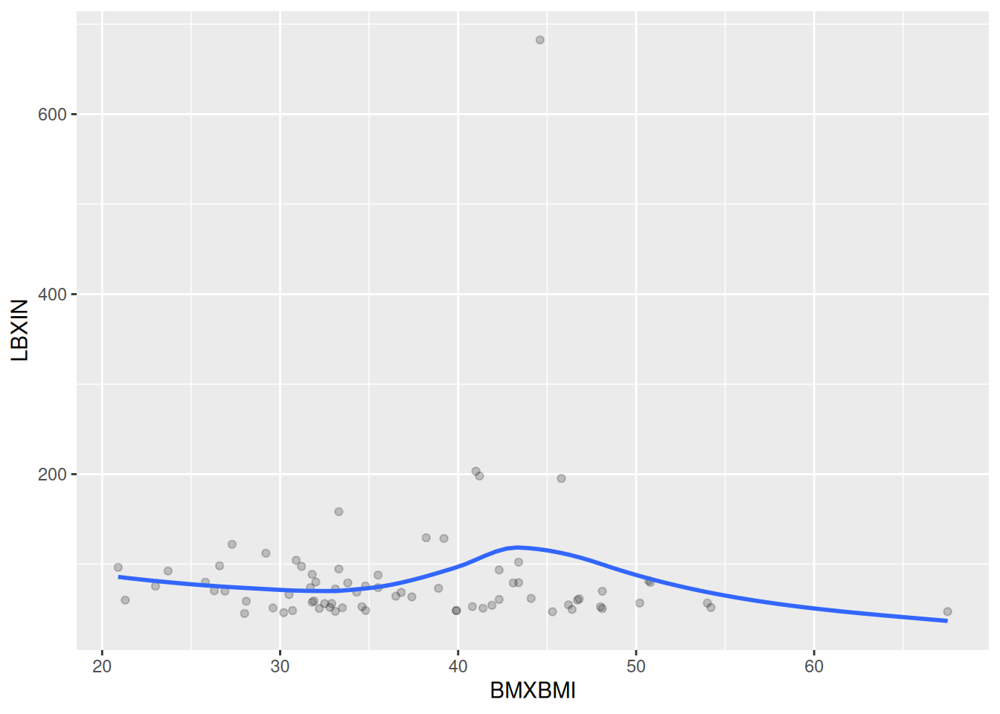
Preguntas
- ¿Cuántos pacientes hay?
- ¿Tiene sentido la forma de la curva?
Ejercicio 5 — Nueva relación clínica
👉 Crea este gráfico:
df_joint %>%
filter(
LBXTR <= 1000#,
#BMXWAIST <= 150
) %>%
ggplot(aes(x = BMXWAIST, y = LBXTR)) +
geom_point(alpha = 0.4) +
geom_smooth(method = "loess", se = FALSE)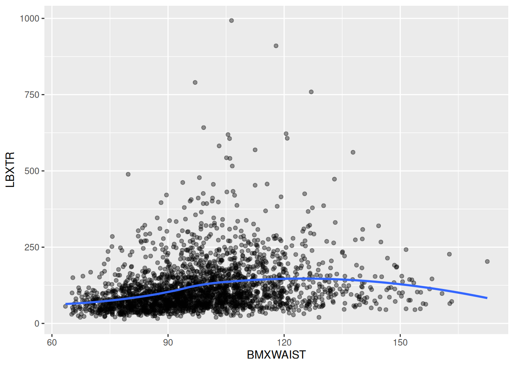
Preguntas
- ¿Dónde aumenta más rápido el riesgo?
- ¿Dónde se “aplana”?
- ¿Qué explicación clínica propones?
Ejercicio 6 — Pensamiento bayesiano
👉 Elige un paciente:
- IMC = 32
- Insulina = 8
Preguntas
- ¿Dónde cae en la gráfica?
- ¿Es típico o atípico?
- ¿Cómo cambiaría tu creencia sobre su riesgo?
Ejercicio 7 — Crear hipótesis
👉 Observa cualquier gráfico y responde:
- ¿Qué patrón ves?
- ¿Qué explicación biológica propones?
- ¿Qué variable falta?
Ejercicio 8 — Densidad oculta
👉 Objetivo: ver dónde están los pacientes realmente
df_joint %>%
filter(
LBXIN < 100,
BMXBMI <= 60
) %>%
ggplot(aes(x = BMXBMI, y = LBXIN)) +
geom_bin2d() +
labs(title = "Densidad IMC vs Insulina")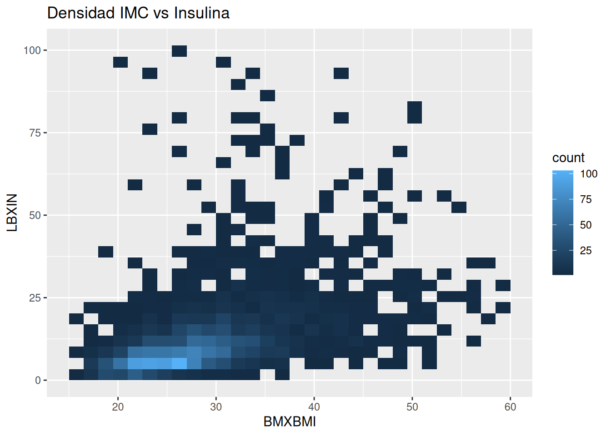
Preguntas
- ¿Dónde se concentran más pacientes?
- ¿Coincide con donde la curva cambia?
- ¿Los extremos tienen suficiente información?
Ejercicio 9 — Filtrar por edad
df_joint %>%
filter(
LBXIN < 100,
BMXBMI <= 60
) %>%
#filter(RIDAGEYR > 50) %>%
ggplot(aes(x = BMXBMI, y = LBXIN)) +
geom_point(alpha = 0.3) +
geom_smooth(method = "loess", se = FALSE)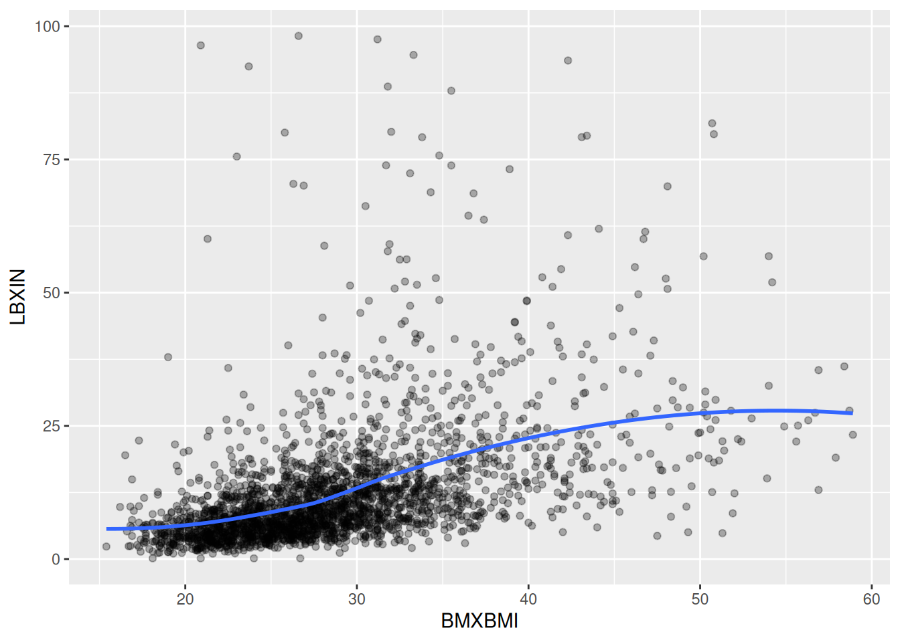
Preguntas
- ¿Cambia la relación en mayores de 50?
- ¿La curva se aplana antes?
- ¿Qué rol juega la edad?
Ejercicio 10 — Subgrupos metabólicos
👉 Crea grupos de triglicéridos:
df_joint <- df_joint %>%
mutate(
trig_cat = case_when(
LBXTR < 150 ~ "normal",
LBXTR < 200 ~ "limite",
TRUE ~ "alto"
)
)Luego:
df_joint %>%
filter(
LBXIN < 100,
BMXBMI <= 60
) %>%
ggplot(aes(x = BMXBMI, y = LBXIN)) +
geom_point(alpha = 0.2) +
geom_smooth(method = "loess", se = FALSE) +
#geom_smooth(method = "lm", se = FALSE) +
facet_wrap(~ trig_cat)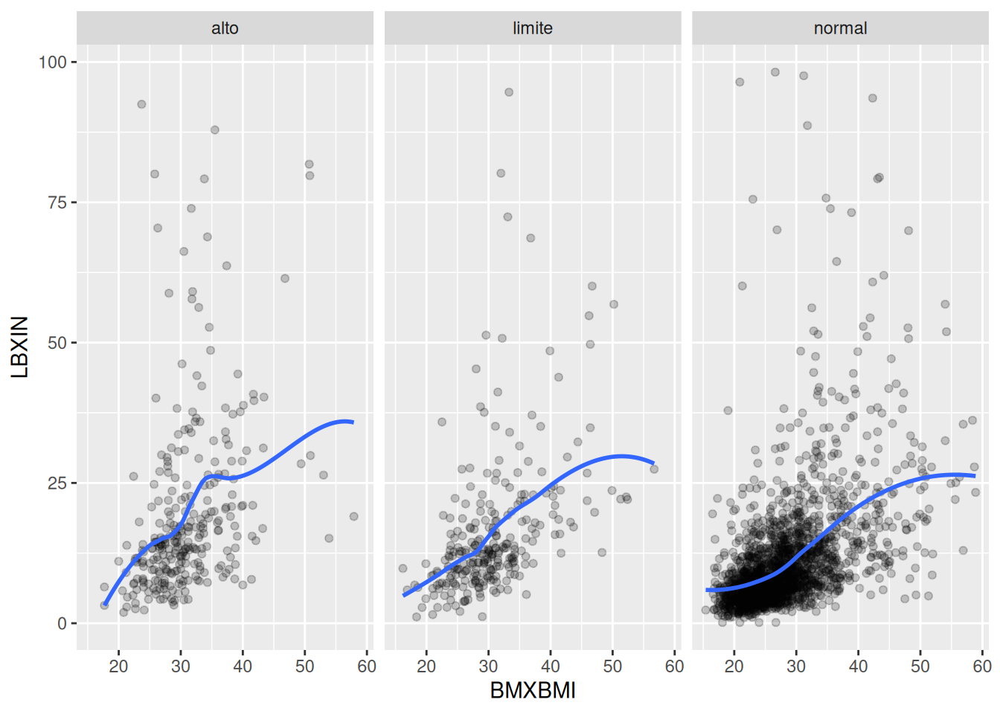
Preguntas
- ¿Los pacientes con triglicéridos altos tienen más insulina?
- ¿Cambia la forma de la curva?
Ejercicio 11 — Buscar pacientes “raros”
df_joint %>%
filter(BMXBMI > 30, LBXIN < 5) %>%
ggplot(aes(x = BMXBMI, y = LBXIN)) +
geom_point(alpha = 0.3) +
geom_smooth(method = "loess", se = FALSE)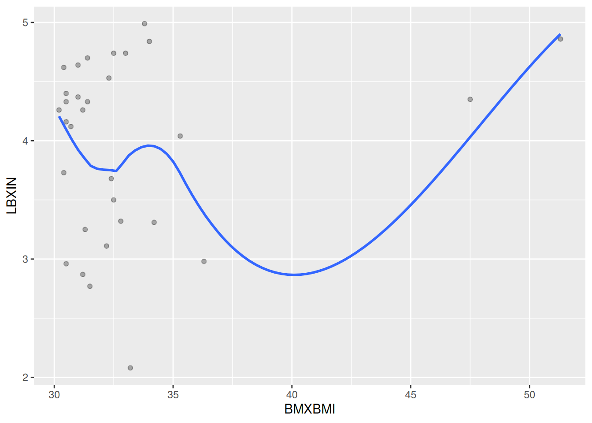
Preguntas
- ¿Existen obesos con baja insulina?
- ¿Qué explicaciones clínicas propones?
Ejercicio 12 — Comparar dos relaciones
Haz dos gráficos:
- IMC vs insulina
df_joint %>%
filter(
LBXIN < 50,
BMXBMI <= 60
) %>%
#filter(RIDAGEYR > 50) %>%
ggplot(aes(x = BMXBMI, y = LBXIN)) +
geom_point(alpha = 0.3) +
geom_smooth(method = "loess", se = FALSE)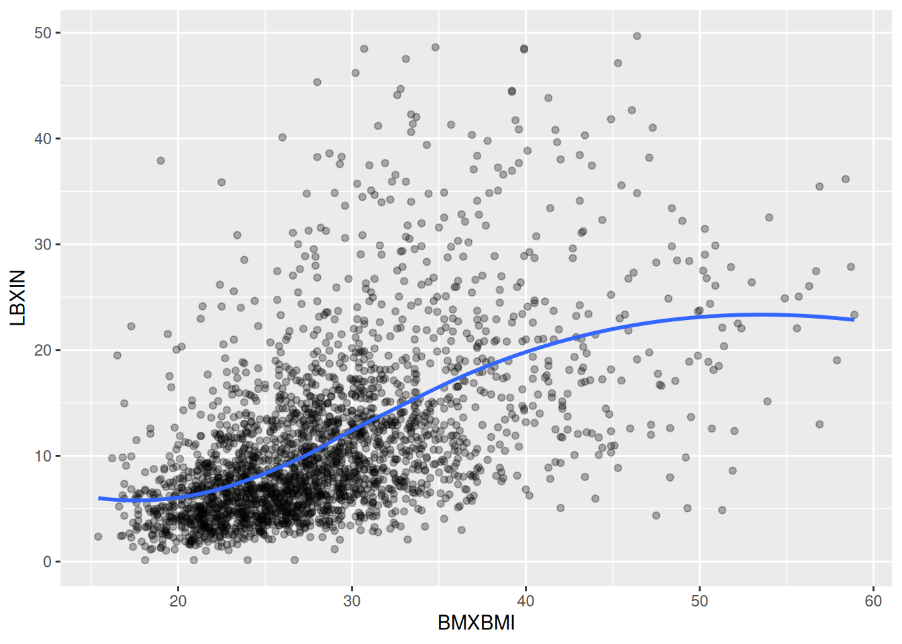
- cintura vs triglicéridos
df_joint %>%
filter(
LBXTR <= 375#,
#BMXWAIST <= 150
) %>%
ggplot(aes(x = BMXWAIST, y = LBXTR)) +
geom_point(alpha = 0.4) +
geom_smooth(method = "loess", se = FALSE)`geom_smooth()` using formula = 'y ~ x'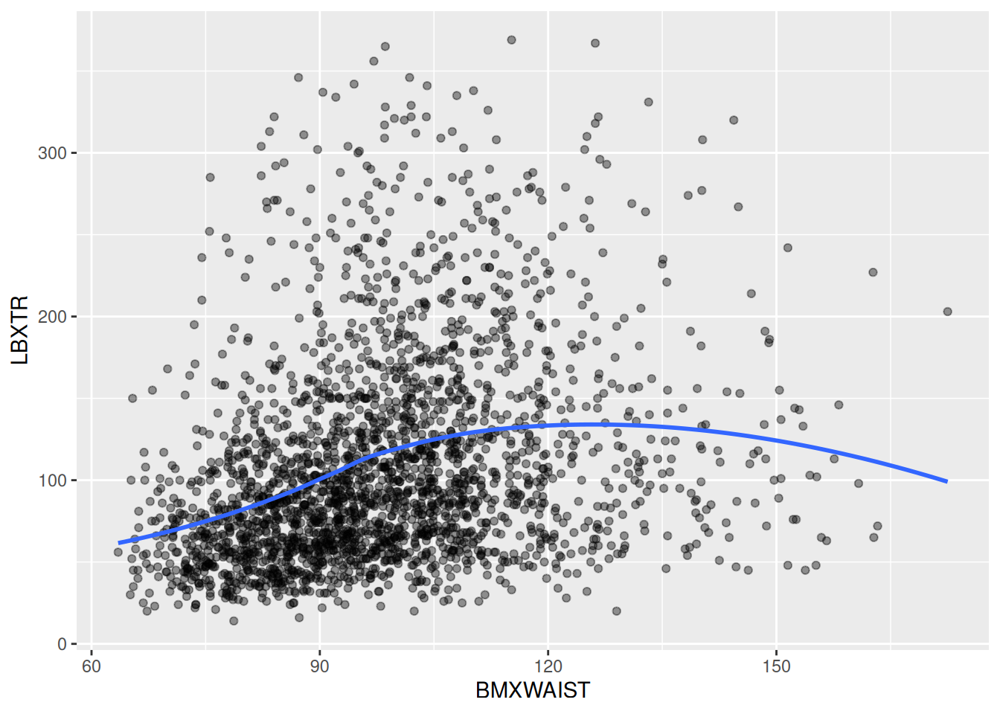
Preguntas
- ¿Cuál relación es más fuerte?
- ¿Cuál es más clínica?
- ¿Cuál usarías en consulta?
Ejercicio 13 — Tu primer insight real
👉 Elige UNA gráfica
Responde:
- ¿Qué patrón ves?
- ¿Dónde cambia la pendiente?
- ¿Qué significa clínicamente?
- ¿Qué variable falta?